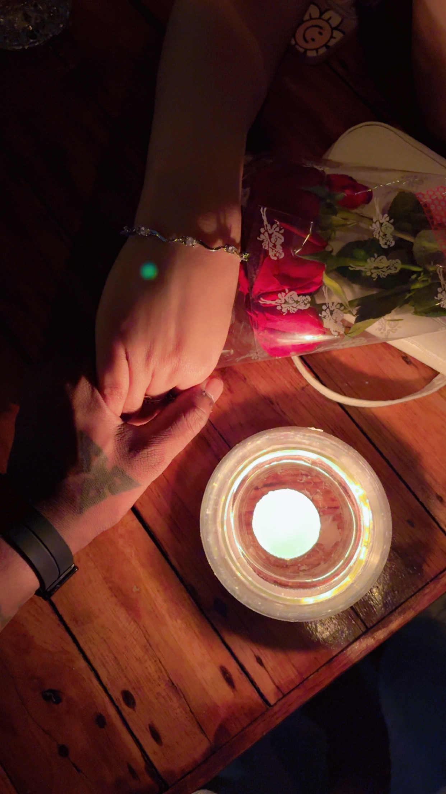

I hid 3 hearts. Find them!
Sometimes I sit quietly and think about how my life looked before you walked into it… and it feels strange, like a sky without stars. Everything was normal, everything was fine, but it was never this beautiful. You came into my world so gently, yet you changed everything so deeply. The way you care, the way you love, the way you exist in my life makes me feel like the luckiest man alive.
You are not just someone I love… you are the peace my heart was searching for without even knowing it. In your smile I find comfort, in your voice I find calm, and in your presence I find a home I never want to leave. There are a thousand beautiful people in this world, but none of them are you, and that is why my heart chose you again and again, every single day.
I promise you something from the deepest corner of my soul… no matter how life changes, no matter what storms come, I will always stand beside you with the same love, the same respect, and the same loyalty. Because loving you is not just a feeling for me, it has become the most beautiful part of my existence.
And if I could choose my life all over again, in every universe, in every lifetime… I would still find you, hold your hand, and fall in love with you all over again. ❤️
